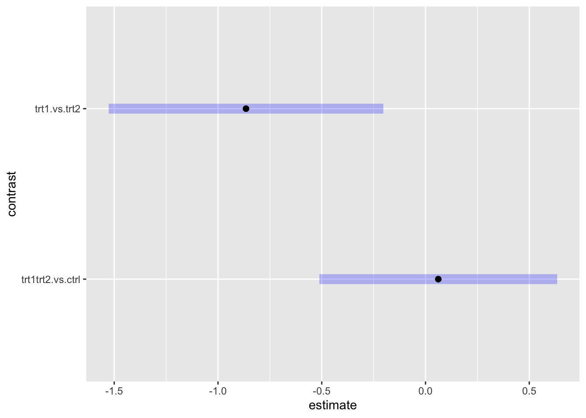

Lab 05: Multiple Comparisons
In this lab, we will learn how to perform planned contrasts and post hoc analysis for one-way ANOVA.
First, we need an aov object. We will continue with the PlantGrowth dataset from the previous lab.
data("PlantGrowth")
plant.aov <- aov(weight ~ group, data = PlantGrowth)
summary(plant.aov)## Df Sum Sq Mean Sq F value Pr(>F)
## group 2 3.766 1.8832 4.846 0.0159 *
## Residuals 27 10.492 0.3886
## ---
## Signif. codes: 0 '***' 0.001 '**' 0.01 '*' 0.05 '.' 0.1 ' ' 1Descriptive Statistics
There are multiple functions from many packages that provide descriptive statistics (e.g., group means, SD). We will use psych::describeBY and apaTables::apa.1way.table
library(psych)
describeBy(weight ~ group, data = PlantGrowth) # This will give us detailed descriptive stats by group##
## Descriptive statistics by group
## group: ctrl
## vars n mean sd median trimmed mad min max range skew kurtosis se
## X1 1 10 5.03 0.58 5.15 5 0.72 4.17 6.11 1.94 0.23 -1.12 0.18
## ---------------------------------------------------------------------------------------------
## group: trt1
## vars n mean sd median trimmed mad min max range skew kurtosis se
## X1 1 10 4.66 0.79 4.55 4.62 0.53 3.59 6.03 2.44 0.47 -1.1 0.25
## ---------------------------------------------------------------------------------------------
## group: trt2
## vars n mean sd median trimmed mad min max range skew kurtosis se
## X1 1 10 5.53 0.44 5.44 5.5 0.36 4.92 6.31 1.39 0.48 -1.16 0.14library(apaTables)
apa.1way.table(dv = weight, iv = group, data = PlantGrowth)##
##
## Descriptive statistics for weight as a function of group.
##
## group M SD
## ctrl 5.03 0.58
## trt1 4.66 0.79
## trt2 5.53 0.44
##
## Note. M and SD represent mean and standard deviation, respectively.
## # For apaTables, you can also save a Word document file into the workspace
apa.1way.table(dv = weight, iv = group, data = PlantGrowth, filename = "onewaydesciptive.doc")##
##
## Descriptive statistics for weight as a function of group.
##
## group M SD
## ctrl 5.03 0.58
## trt1 4.66 0.79
## trt2 5.53 0.44
##
## Note. M and SD represent mean and standard deviation, respectively.
## # Extra: For APA formatted ANOVA table
apa.aov.table(plant.aov, filename = "anovatable.doc")##
##
## ANOVA results using weight as the dependent variable
##
##
## Predictor SS df MS F p partial_eta2 CI_90_partial_eta2
## (Intercept) 772.06 1 772.06 1986.79 .000
## group 3.77 2 1.89 4.85 .016 .26 [.03, .43]
## Error 10.49 27 0.39
##
## Note: Values in square brackets indicate the bounds of the 90% confidence interval for partial eta-squaredPlanned contrasts
In a priori contrasts (usually just ‘contrasts’), we determine a set of comparisons beforehand (i.e., before the data collection). The number of planned comparisons are determined prior to the data collection. Hence, the familiy-wise error rate are known beforehand.
In a modern standard, these specific hypotheses are usually “pre-registered” on a public site (such as the Open Science Framework website: http://osf.io).
Recall that in the PlantGrowth dataset, we have three conditions: control, treatment 1, treament 2 (in this particular order). The order of levels in a factor is VERY IMPORTANT when analyzing contrasts. This is the order that you will use in a coefficient matrix.
summary(PlantGrowth$group)## ctrl trt1 trt2
## 10 10 10#or
levels(PlantGrowth$group)## [1] "ctrl" "trt1" "trt2"Suppose that we have two contrasts in our mind. We believe that treatmant 1 and treatment 2 will result in more weight than the control group. In other words, we plan to contrast (trt1 + trt2)/2 with ctrl. The other contrast is between trt1 and trt2 because we want to know which one is better for plant growth.
In sum, we have two comparisons to make (trt1 + trt2)/2 - ctrl and trt1 - trt2 (or trt2 - trt1, depending on which direction you want to investigate).
emmeans package
To calculate contrasts and post hocs, we will use the emmeans (estimated marginal means) package.
#install.packages("emmeans")
library(emmeans)First, we need to specify how many comparions do we want and represent each comparison in a coefficient matrix. Each row in the matrix represent level of a factor, in this case, ctrl, trt1, and trt2. It is important to note that an order of coefficients must correspond to levels of a factor. Each column represents our comparisons/contrasts.
contrast_m <- data.frame("trt1trt2.vs.ctrl" = c(-1, 1/2, 1/2), # trt1 and trt2 were averaged (each weight 1/2) to compare against crl (-1)
"trt1.vs.trt2" = c( 0, 1, -1)) # trt1 (+1) against trt2 (-1). ctrl is leftout (0).
contrast_m## trt1trt2.vs.ctrl trt1.vs.trt2
## 1 -1.0 0
## 2 0.5 1
## 3 0.5 -1Next, we will use emmeans to create an emmGrid object, which is an object containing estimated marginal means for each group (i.e., group mean). For this analysis we need two arguments in emmeans(object, specs)
- For
object, we will use theaovobject. - For
specs, we will specify that we want means for each group with~ group.
emmeans(plant.aov, ~ group)## group emmean SE df lower.CL upper.CL
## ctrl 5.03 0.197 27 4.63 5.44
## trt1 4.66 0.197 27 4.26 5.07
## trt2 5.53 0.197 27 5.12 5.93
##
## Confidence level used: 0.95plant.emm <- emmeans(plant.aov, ~ group) # save to an object for later useNote: Looking at the means, you might notice that trt1 was actually lower than ctrl. Combining trt1 and trt2 will likely cancel each other out. Combining treatment conditions only make sense if they are similar in some aspects. In this case, it is likely that trt1 and trt2 are totally different kind of treatment and should not be combined. However, we will proceed with this contrast for a demontration purpose.
emmeans::contrast function
Next we will run contrasts on those group means. The contrast function will need four arguments contrast(object, method, adjust, infer)
ojectis an emmGrid object from theemmeansfunction.methodwill be our coefficient matrixcontrast_m.adjustis a p value adjustment method for multiplicity. Let’s use"bonferroni". Some other options are ("tukey", "scheffe", "sidak", "mvt", "none")inferis an option for inferential stats. ChooseTRUEto display both t tests and CIs.
contrast(plant.emm, method = contrast_m, adjust = "none", infer = TRUE) # results with no p value adjustment## contrast estimate SE df lower.CL upper.CL t.ratio p.value
## trt1trt2.vs.ctrl 0.0615 0.241 27 -0.434 0.557 0.255 0.8009
## trt1.vs.trt2 -0.8650 0.279 27 -1.437 -0.293 -3.103 0.0045
##
## Confidence level used: 0.95contrast(plant.emm, method = contrast_m, adjust = "bonferroni", infer = TRUE) # p values adjusted with bonferroni method. Notice that it multiply each p value by the number of comparisons (2). ## contrast estimate SE df lower.CL upper.CL t.ratio p.value
## trt1trt2.vs.ctrl 0.0615 0.241 27 -0.512 0.635 0.255 1.0000
## trt1.vs.trt2 -0.8650 0.279 27 -1.527 -0.203 -3.103 0.0089
##
## Confidence level used: 0.95
## Conf-level adjustment: bonferroni method for 2 estimates
## P value adjustment: bonferroni method for 2 testsplant.contrast <- contrast(plant.emm, method = contrast_m, adjust = "bonferroni") # save as an object for plotting# Plotting contrasts and their confidence interval
plot(plant.contrast)
Looking at the results after adjustment, we can see that the trt1trt2 vs ctrl contrast was not significant (p value above .05 and 95% CI contains zero). That is, when combining trt1 and trt2 together, the plant weight was not different from ctrl. On the other hand, trt2 resulted in significantly heavier plants than trt1.
Finding M and SD for complex contrasts
For a contrast that combine groups together, their mean and SD would not be readily available in a regular descriptive statistics table. You will need to extract those groups from the dataset to calclate their means and standard deviations.
trt1.trt2 <- subset(PlantGrowth, group == "trt1" | group == "trt2")
describe(trt1.trt2$weight)## trt1.trt2$weight
## n missing distinct Info Mean Gmd .05 .10 .25 .50 .75 .90 .95
## 20 0 20 1 5.094 0.8978 3.818 4.136 4.620 5.190 5.605 6.042 6.158
##
## lowest : 3.59 3.83 4.17 4.32 4.41, highest: 5.80 5.87 6.03 6.15 6.31
##
## Value 3.59 3.83 4.17 4.32 4.41 4.69 4.81 4.89 4.92 5.12 5.26 5.29 5.37 5.50 5.54 5.80 5.87 6.03 6.15 6.31
## Frequency 1 1 1 1 1 1 1 1 1 1 1 1 1 1 1 1 1 1 1 1
## Proportion 0.05 0.05 0.05 0.05 0.05 0.05 0.05 0.05 0.05 0.05 0.05 0.05 0.05 0.05 0.05 0.05 0.05 0.05 0.05 0.05ctrl <- subset(PlantGrowth, group == "ctrl")
describe(ctrl$weight)## ctrl$weight
## n missing distinct Info Mean Gmd .05 .10 .25 .50 .75 .90 .95
## 10 0 10 1 5.032 0.6836 4.319 4.467 4.550 5.155 5.293 5.633 5.871
##
## lowest : 4.17 4.50 4.53 4.61 5.14, highest: 5.17 5.18 5.33 5.58 6.11
##
## Value 4.17 4.50 4.53 4.61 5.14 5.17 5.18 5.33 5.58 6.11
## Frequency 1 1 1 1 1 1 1 1 1 1
## Proportion 0.1 0.1 0.1 0.1 0.1 0.1 0.1 0.1 0.1 0.1Post hoc
A post hoc analysis is usually done in a pairwise manner (i.e., looking at all possible pairs). Because of a larger number of comparisons, conservative adjustment, such as Bonferroni method, is not recommended. We will use Tukey’s Honest Significant Differences (HSD) instead. There are multiple ways to run Tukey’s HSD. We will mention the Base R TukeyHSD and emmeans::pairs.
Base R
TukeyHSD(plant.aov) # input is an aov object. ## Tukey multiple comparisons of means
## 95% family-wise confidence level
##
## Fit: aov(formula = weight ~ group, data = PlantGrowth)
##
## $group
## diff lwr upr p adj
## trt1-ctrl -0.371 -1.0622161 0.3202161 0.3908711
## trt2-ctrl 0.494 -0.1972161 1.1852161 0.1979960
## trt2-trt1 0.865 0.1737839 1.5562161 0.0120064plot(TukeyHSD(plant.aov))Among the three groups, only trt2 was significantly higher than trt1. The ctrl was to be somewhere in the middle between trt1 and trt2 and was not significantly different from either of them.
emmeans::pairs
pairs(plant.emm, adjust = "tukey", infer = TRUE) #input is an emm object. Options are similar to contrast, but without `method = `. ## contrast estimate SE df lower.CL upper.CL t.ratio p.value
## ctrl - trt1 0.371 0.279 27 -0.32 1.062 1.331 0.3909
## ctrl - trt2 -0.494 0.279 27 -1.19 0.197 -1.772 0.1980
## trt1 - trt2 -0.865 0.279 27 -1.56 -0.174 -3.103 0.0120
##
## Confidence level used: 0.95
## Conf-level adjustment: tukey method for comparing a family of 3 estimates
## P value adjustment: tukey method for comparing a family of 3 estimatesplant.pairs <- pairs(plant.emm, adjust = "tukey") #save for later use. You can also use contrast(method = "pairwise").
contrast(plant.emm, method = "pairwise", adjust = "tukey", infer = TRUE)## contrast estimate SE df lower.CL upper.CL t.ratio p.value
## ctrl - trt1 0.371 0.279 27 -0.32 1.062 1.331 0.3909
## ctrl - trt2 -0.494 0.279 27 -1.19 0.197 -1.772 0.1980
## trt1 - trt2 -0.865 0.279 27 -1.56 -0.174 -3.103 0.0120
##
## Confidence level used: 0.95
## Conf-level adjustment: tukey method for comparing a family of 3 estimates
## P value adjustment: tukey method for comparing a family of 3 estimatesYou can use the coef function to look at a coefficient matrix for "pairwise" method. You can see how each combinaiton was compared.
coef(plant.pairs)## group c.1 c.2 c.3
## ctrl ctrl 1 1 0
## trt1 trt1 -1 0 1
## trt2 trt2 0 -1 -1And the plot for pairwise comparisons.
plot(plant.pairs)Post hoc for unequal variance
If a homogeneity of variance assumption is violated, you should use Welch’s one-way test instead of ANOVA. For post-hoc, you can use Game-Howell Post-hoc test from the rstatix package.
# install.packages("rstatix")
library(rstatix)##
## Attaching package: 'rstatix'## The following objects are masked from 'package:plyr':
##
## desc, mutate## The following objects are masked from 'package:effectsize':
##
## cohens_d, eta_squared## The following object is masked from 'package:MASS':
##
## select## The following object is masked from 'package:stats':
##
## filtergames_howell_test(PlantGrowth, weight ~ group) # input arguments are (data, model)## # A tibble: 3 × 8
## .y. group1 group2 estimate conf.low conf.high p.adj p.adj.signif
## * <chr> <chr> <chr> <dbl> <dbl> <dbl> <dbl> <chr>
## 1 weight ctrl trt1 -0.371 -1.17 0.430 0.475 ns
## 2 weight ctrl trt2 0.494 -0.101 1.09 0.113 ns
## 3 weight trt1 trt2 0.865 0.114 1.62 0.024 *detach(package:rstatix)Plotting
To create a plot for a report, ggplot2 is prefered over the Base R graphic.
Bar graph
plant.summary <- summary(plant.emm) # create a variable containing means and SDs for each condition
plant.summary## group emmean SE df lower.CL upper.CL
## ctrl 5.03 0.197 27 4.63 5.44
## trt1 4.66 0.197 27 4.26 5.07
## trt2 5.53 0.197 27 5.12 5.93
##
## Confidence level used: 0.95plant.summary$Condition <- factor(plant.summary$group, labels = c("Control", "Treatment 1", "Treatment 2")) # create a new factor "Condition" and re-label all levels.
plant.summary## group emmean SE df lower.CL upper.CL Condition
## ctrl 5.03 0.197 27 4.63 5.44 Control
## trt1 4.66 0.197 27 4.26 5.07 Treatment 1
## trt2 5.53 0.197 27 5.12 5.93 Treatment 2
##
## Confidence level used: 0.95library(ggplot2)
ggplot(plant.summary, aes(x = Condition, y = emmean)) + #use Condition from plant.summary as X-axis; emmean for Y-axis.
geom_col(aes(fill = Condition)) + # Add column geometry and fill the color by condition
geom_errorbar(aes(ymin = lower.CL, ymax = upper.CL, width = .3)) + # use lower.CL and upper.CL from plant.summary to create error bars. Adjust the width to make them look nice.
xlab("Condition") + # change X axis label to Condition
ylab("Weight") + # change Y axis label to Weight
theme_classic() # classic theme is most similar to APA format. 
ggsave("mean_plot.png") # You can save the graph to a file in a working directory.## Saving 7 x 5 in imageDot plot
ggplot(plant.summary, aes(x = Condition, y = emmean, group = 1)) + #similar to above graph, but need `group = 1` option.
geom_point() + # Create a point for each mean
geom_line() + # create a line connecting each group mean
geom_errorbar(aes(ymin = lower.CL, ymax = upper.CL), width = 0.2) + #error bars
ylim(c(0, 6.5)) + #set Y axis to show 0-6.5 values
xlab("Condition") +
ylab("Weight") +
theme_classic()